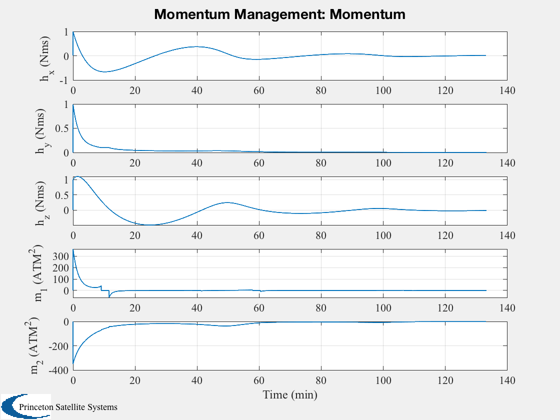
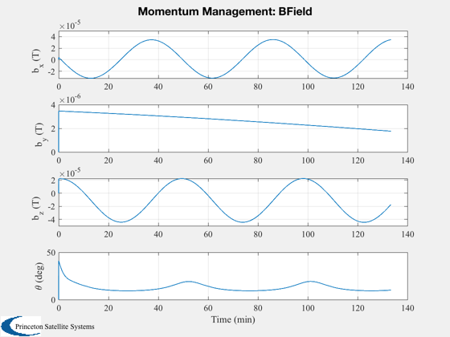

Demonstrate simple dipole based momentum management
This uses a pseudo-inverse to get the best fit between the available
dipoles and the desired momentum unloading torque.
----------------------------------------------------------------------
See also Plot2D, TimeLabl, RK4, Date2JD, MomentumUnloading,
RHSMomentum, Period, BDipole
------------------------------------------------------------------------
Contents
Simulation duration
tEnd = 8000;
Time step
dT = 1;
nSim = ceil(tEnd/dT);
The momentum to be removed
h = [1;1;1];
Start Julian date
d.jD0 = Date2JD([2012 4 5 0 0 0]);
xPlot = zeros(9,nSim);
Momentum unloading gain
gain = 0.01;
Orbit
a = 7000;
p = Period(a);
theta = linspace(0,2*pi*tEnd/p,nSim);
x = a*[cos(theta);zeros(1,nSim);sin(theta)];
Run the simulation
t = 0;
Dipole vectors
u = [1 0;0 1;0 0];
for k = 1:nSim
b = BDipole( x(:,k), d.jD0+t/86400 );
[tMM, m, ang] = MomentumUnloading( u, b, gain, h );
h = RK4( @RHSMomentum, h, dT, t, tMM );
xPlot(:,k+1) = [h;m;b;ang*180/pi];
t = t + dT;
end
Plotting
[t, tL] = TimeLabl( (0:nSim)*dT );
Y-axis labels
yL = {'h_x (Nms)' 'h_y (Nms)' 'h_z (Nms)' 'm_1 (ATM^2)' 'm_2 (ATM^2)'...
'b_x (T)', 'b_y (T)' 'b_z (T)' '\theta (deg)'};
Plotting utility
Plot2D( t, xPlot(1:5,:), tL, yL(1:5), 'Momentum Management: Momentum' );
Plot2D( t, xPlot(6:9,:), tL, yL(6:9), 'Momentum Management: BField' );
 